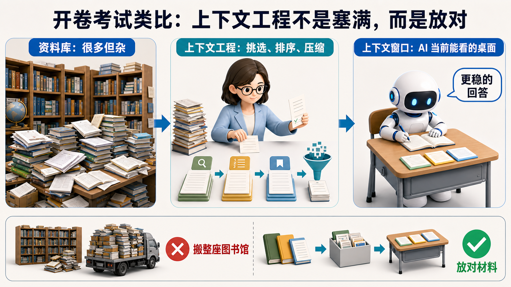
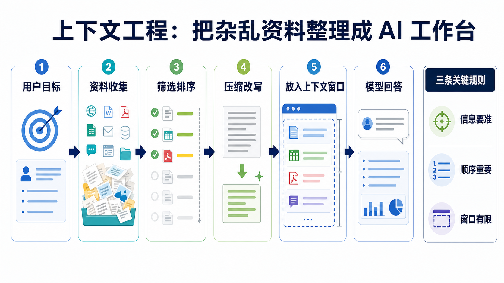

1
理解目标
先弄清用户到底要什么：是解释概念、写代码、查事实、做决策，还是执行一串任务。目标不同，需要的上下文完全不同。
为什么聪明的 AI，不只是“会回答”，更要先把资料摆对？
解决资料太多、提示太乱、检索结果不准、工具说明冲突、历史对话拖累回答的问题。
AI 产品竞争不再只看模型多大，也要看能否把任务资料、记忆、工具和规则组织好。
用“开卷考试”和“考试桌面”的类比，看懂为什么不是塞得越多越好。
上下文工程解释的是：为什么同一个模型，在不同资料组织方式下，会像两个完全不同的助手。
很多人以为，模型越大、上下文窗口越长，AI 就自然更聪明。现实里不是这样。你把一堆网页、会议记录、代码、表格、历史聊天和工具说明全塞进去，模型常常不是变聪明，而是被淹没。
这就像学生参加开卷考试。允许带书不等于一定考得好。如果桌上堆满教材、打印稿、草稿纸和过期资料，学生反而会找不到重点。真正厉害的备考老师，会提前把最相关的资料挑出来，按答题顺序摆好，还会删掉容易误导的旧材料。
AI 也是这样。大模型每次回答时，真正能直接读取的是上下文窗口。上下文工程要做的，是决定哪些信息该放进去、放多少、按什么顺序放、如何压缩、哪些旧信息该丢掉、哪些工具说明必须保留。
它正在成为 AI 应用工程的核心能力。RAG、Agent、AI 记忆、工具调用、长上下文模型，本质上都绕不开同一个问题：怎样让模型在有限注意力里看到最有用的材料。
想象一个学生要回答一道历史大题。学校允许开卷，他可以看书、笔记、资料卡、老师讲义和同学讨论记录。
最笨的方法，是把整座图书馆都搬到桌上。资料确实多，但桌面有限，学生还要在一堆无关信息里翻找。时间被浪费，重点被稀释，甚至可能被错误资料带偏。
更好的方法，是让一位老师提前整理：先看题目要问什么，再选出最相关的几页，按“背景、证据、推理、结论”的顺序摆好，把长篇内容压缩成清楚笔记，并标出哪些资料只是参考、哪些资料必须引用。
上下文工程就是这位老师。它不替 AI 回答问题，而是帮助 AI 在回答前拥有一张干净、有序、可信的考试桌面。

它不是一句提示词技巧，而是一条把任务、资料、记忆、工具和规则组织给模型看的工程链路。

先弄清用户到底要什么：是解释概念、写代码、查事实、做决策，还是执行一串任务。目标不同，需要的上下文完全不同。
从系统提示、用户输入、历史对话、检索结果、文件、数据库、工具返回、长期记忆中拿到候选信息。
不是所有材料都值得放进去。要优先放最相关、最新、可信、能直接支持回答的信息，并把重要内容放在更容易被模型利用的位置。
长材料需要摘要、结构化、去重和重写。好的压缩不是把字变少，而是保留证据、限制、定义和关键细节。
上下文窗口有限。系统要决定：系统规则、工具说明、用户需求、资料证据、历史状态，各占多少位置。
Agent 多步工作时，上下文会变旧、变长、变乱。需要不断删除过期信息，加入新证据，避免模型被历史噪音拖住。
| 术语 | 一句专业解释 | 一句白话解释 |
|---|---|---|
| Context 上下文 | 模型当前生成时可读取的输入信息集合。 | AI 回答前，桌面上摊开的全部材料。 |
| Context Window 上下文窗口 | 模型一次能处理的最大 token 范围。 | 这张桌面有多大，能同时放多少纸。 |
| Context Engineering 上下文工程 | 设计、选择、压缩、排序和维护模型上下文的工程实践。 | 帮 AI 整理桌面，让它看到该看的东西。 |
| RAG 检索增强生成 | 先从外部知识库取回相关资料，再交给模型回答。 | 像开卷考试前先去查书，但查到的内容还要摆好。 |
| Prompt 提示词 | 用户或系统给模型的任务指令和约束。 | 你对 AI 说的题目、要求和规则。 |
| System Prompt 系统提示 | 对模型行为、身份、边界和输出方式的高优先级指令。 | 考场规则和老师要求，通常比普通聊天更重要。 |
| Tool Description 工具说明 | 告诉模型有哪些工具、何时调用、输入输出是什么的描述。 | 告诉 AI 桌上有哪些计算器、字典和搜索器。 |
| Memory 记忆 | 跨会话保存并在需要时取回的用户、任务或环境信息。 | 不是当前桌面，而是长期笔记本。 |
| Context Rot 上下文腐化 | 上下文随多轮任务变长变杂，导致模型表现下降的现象。 | 桌面越堆越乱，最后重点被旧纸盖住。 |
| Compression 压缩 | 把长内容缩短并保留任务所需关键信息的过程。 | 把厚书整理成能答题的重点笔记。 |
假设一家电商公司想让 AI 客服回答“我的订单为什么还没到”。如果只把用户问题丢给模型，模型可能会说一些通用安慰话，听起来礼貌，但没有真正解决问题。
一个更好的系统会先做上下文工程。它会把当前用户问题、订单状态、物流节点、售后政策、用户历史投诉、可用工具、回复口径和隐私规则整理成一份短而清楚的工作台。
例如，系统不需要把整本客服手册都塞进去，而只放与“延迟配送”和“补偿规则”相关的片段；也不需要把用户所有历史聊天都放进去，而只保留最近一次投诉和已承诺的处理方案。
然后模型看到的是一张整理好的桌面：用户在问什么、订单现在在哪里、公司允许怎么处理、哪些话不能说、下一步可以调用哪个工具。这样回答会更具体、更一致，也更不容易编造。
这就是为什么很多 AI 产品的真实差距，不只来自模型本身，而来自背后的上下文组织能力。
上下文窗口是桌面大小；上下文工程是整理桌面的方法。
RAG 负责查资料；上下文工程负责把查到的资料筛好、压好、摆好。
记忆是长期笔记本；上下文工程决定什么时候把哪页笔记拿上桌。
Agent 会多步行动；上下文工程负责维持每一步的任务状态和工具信息。
提示词像题目和要求；上下文工程还要管理证据、工具、历史和外部资料。
长窗口能放更多材料；上下文工程决定哪些材料真的值得放进去。